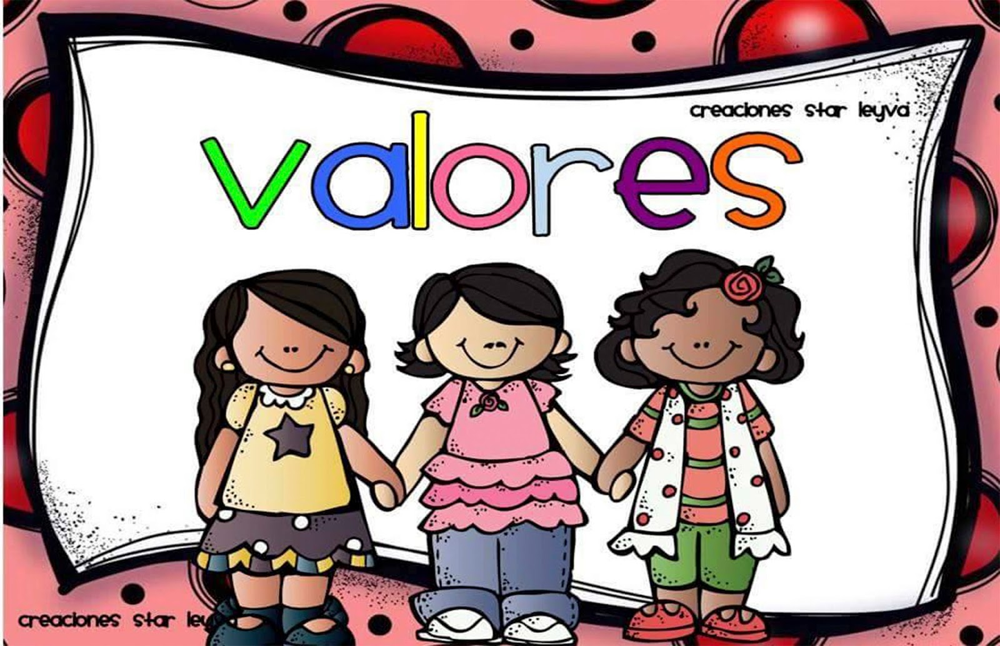

| Valor del mes | |
|---|---|
| Mes de la confianza:La equidad es la justicia natural que se caracteriza por la imparcialidad a la hora de reconocer el derecho de cada uno. La equidad se adapta a las necesidades particulares de cada persona con el fin de hacer lo más justo. |  |
En el mes de marzo yo lo vivo feliz porque todos son equitativos,Es por ello que suele ser relacionado con la justicia social, ya que defiende las mismas condiciones y oportunidades para todas las personas, sin distinción, solo adaptándose en los casos particulares, La equidad lucha contra la pobreza, la discriminación, el racismo, la xenofobia, la homofobia, entre otras cuestiones que fomenten la distancia y las diferencias entre los individuos, Asimismo a estas políticas deben sumárseles igualdad de oportunidades laborales, que sean además puestos dignos. Las condiciones de vida son también elementales, y no solo hacen referencia a una buena vivienda, sino que también acceso a agua potable, electricidad, redes de desechos cloacales etc, Es por ello que es considerado como uno de los valores esenciales del Derecho, como la justicia que debe aplicarse al tratamiento de impuestos de las personas.